Monitores Samsung en Honduras: precios comparados
18 productos Samsung en 2 tiendas (Diunsa, Sycom). Desde L 3,600.01.
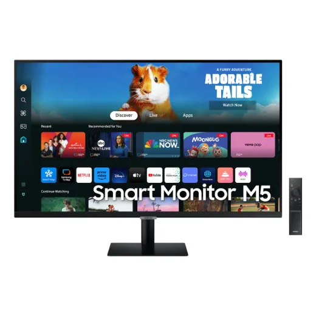
Monitor Samsung 32" M5/FHD/Smart/Hdr5L 7,490En 2 tiendas · más barato en Diunsa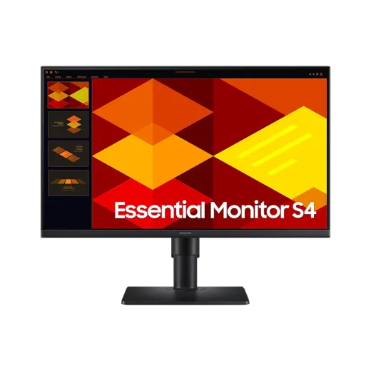
Monitor Samsung 24"/FHD/IPS/100HZL 4,690En Diunsa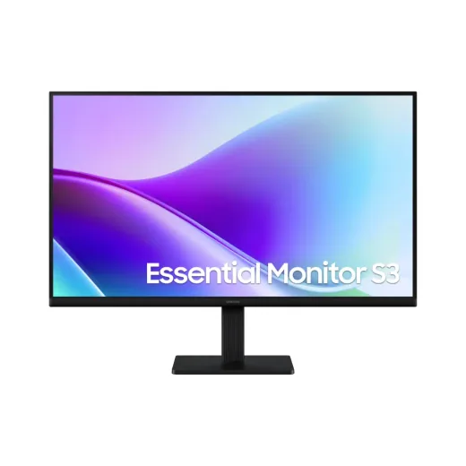
Monitor LED 27" Samsung Essential S3 · FHD 120Hz 5ms · 2xHDMI LS27F320GANXZAL 4,795.01En Sycom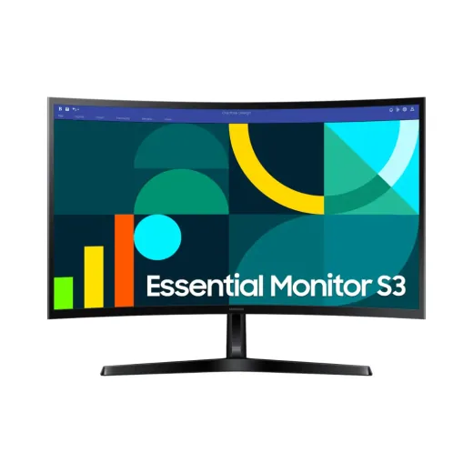
Monitor LED 27" Samsung Essential S3 S36GD Curvo · FHD 100Hz 4ms · HDMI/VGA LS27D366GANXZAL 4,995En Sycom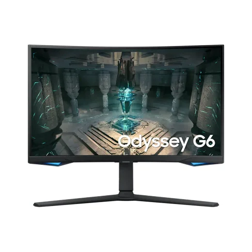
Monitor LED 27" Curvo Gamer Samsung Odyssey G6 · QHD/2K 240Hz 1ms SmartThings (1xDP/2xHDMI/1xRJ45) LS27BG652ENXGOL 13,490En 2 tiendas · más barato en Diunsa- Monitor LED 24" Curvo Samsung Essential S3 S36GD · FHD 100Hz 4ms · HDMI/VGA LS24D366GANXZAL 3,600.01En Sycom
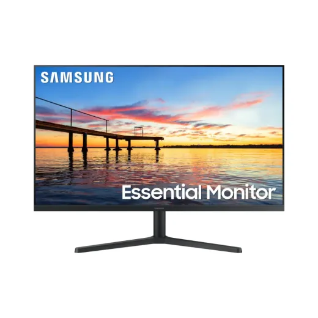
Monitor LED 32" Samsung Essential S3 · FHD 75Hz 8ms · HDMI/DP LS32B300NWNXGOL 6,995En Sycom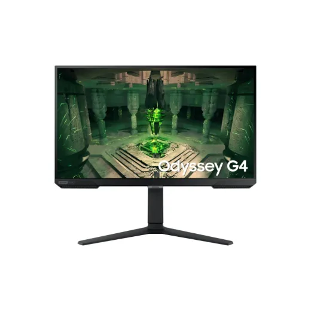
Monitor LED 27" Gamer Samsung Odyssey G4 · FHD 240Hz 1ms (DP/2xHDMI) LS27BG402ENXGOL 7,995En Sycom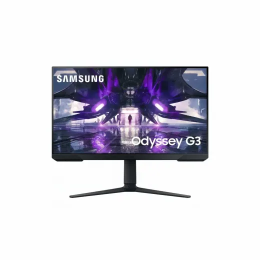
Monitor LED 27" Gamer Samsung Odyssey G3 · FHD 165Hz 1ms (HDMI/DP) S27AG320NNXZAL 8,200.01En Sycom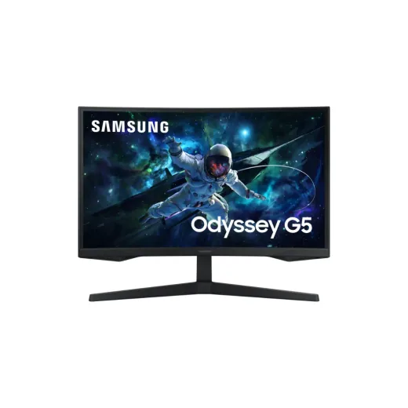
Monitor LED 27" Curvo Gamer Samsung Odyssey G5 · QHD/2K 165Hz 1ms (1xHDMI/1xDP) LS27CG552ENXZAL 8,200.01En Sycom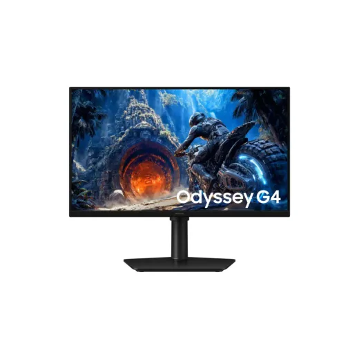
Monitor LED 25" Gamer Samsung Odyssey G4 · FHD 300Hz/240Hz 1ms (DP/HDMI) LS25HG400ENXZAL 9,395.01En Sycom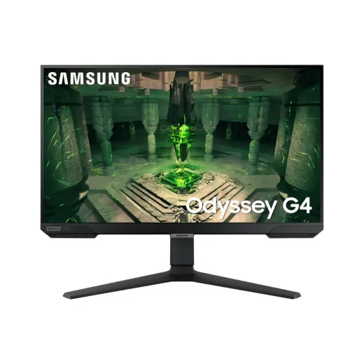
Monitor LED 25" Gamer Samsung Odyssey G4 · FHD IPS 240Hz 1ms · 2xHDMI/DP · LS25BG402ENXGOL 9,395.01En Sycom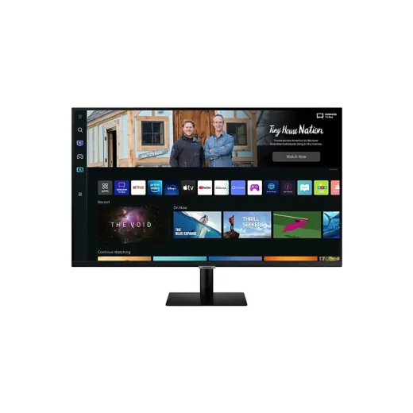
Monitor LED 32 Samsung Smart M5 DP/HDMI 60hz 4ms LS32BM500ENXGOL 10,895En Sycom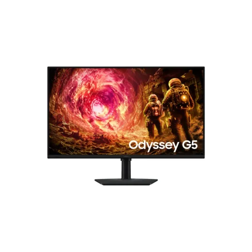
Monitor LED 32" Gamer Samsung Odyssey G5 · QHD/2K 180Hz 1ms (1xHDMI/1xDP) LS32FG502ENXZAL 10,995En Sycom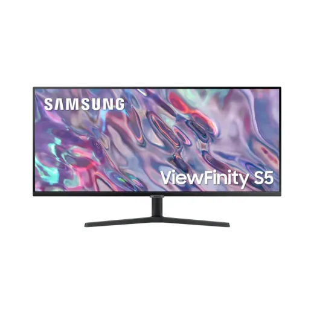
Monitor LED 34" Samsung ViewFinity S5 · UWQHD/2K 100Hz 5ms · 2xHDMI/DP LS34C502GANXZAL 12,300En Sycom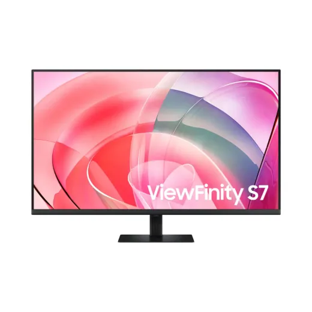
Monitor LED 37" Samsung ViewFinity S7 S70D · 4K 60Hz 5ms · HDMI/DP LS37D700EANXZAL 14,995En Sycom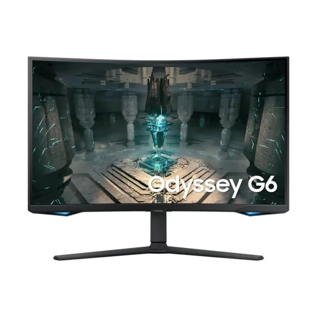
Monitor Samsung Gaming 32"/Qhd/240HZL 15,490En Diunsa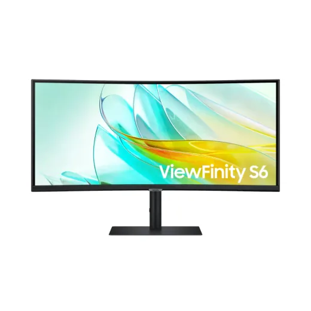
Monitor LED 34" Curvo Samsung ViewFinity S6 S65C · UWQHD/2K 100Hz 5ms · HDMI/DP/USB-C LS34C650UANXGOL 16,500En Sycom
Preguntas frecuentes
¿Dónde están más baratos los monitores Samsung en Honduras?
Diunsa tuvo el precio más bajo en 2 de 2 productos Samsung que se venden en varias tiendas (14 de noviembre de 2026).